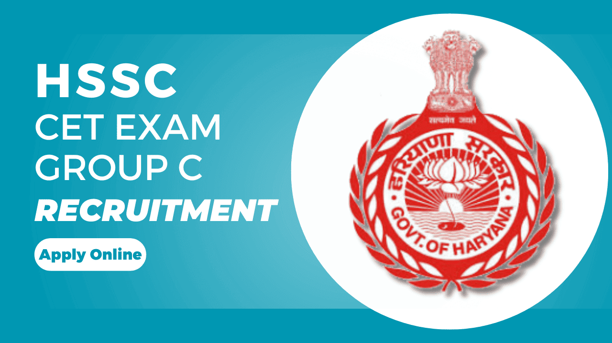

SSC CGL 2025 – पूरी जानकारी
Notification, Eligibility, Salary, Exam Pattern
Gramin Dak Sevak 2025: No Exam, 10th Pass Govt Job, Salary, Selection Process, और Apply कैसे करें – पूरी जानकारी

GDS (Gramin Dak Sevak) एक ऐसी सरकारी नौकरी है जो India Post के ग्रामीण क्षेत्रों में postal कामकाज के लिए होती है। इसमें सबसे खास बात है — कोई भी written exam नहीं होता! सिर्फ 10वीं के marks के आधार पर merit बनती है और सीधा selection होता है।
👉 अगर आपने 10वीं पास की है, तो ये job आपके लिए एक सुनहरा मौका हो सकता है।
| Event | Date (Tentative) |
|---|---|
| Notification Release | July 2025 (Expected) |
| Online Form Start | July 2025 |
| Last Date to Apply | August 2025 |
| Merit List / Result Date | September 2025 |
| क्राइटेरिया | डिटेल |
|---|---|
| Qualification | 10th पास (Maths & English के साथ) |
| Age Limit | 18 से 40 वर्ष (SC/ST/OBC को छूट) |
| Computer Knowledge | Basic computer course certificate (60 days का) |
| Local Language | Apply की गई State की भाषा आनी चाहिए |
| Gender | Male/Female दोनों apply कर सकते हैं |
🟢 Formula = 10th Marks + Local Language Knowledge + Computer Certificate
| पोस्ट नाम | काम का विवरण |
|---|---|
| Branch Post Master (BPM) | पोस्ट ऑफिस को manage करना, record रखना |
| Assistant BPM (ABPM) | BPM की help करना, delivery लेना-देना |
| Dak Sevak | Letters, parcels की delivery और collection |
| पोस्ट | Salary / Month (Approx) |
|---|---|
| BPM | ₹12,000 – ₹29,380 |
| ABPM | ₹10,000 – ₹24,470 |
| Dak Sevak | ₹10,000 – ₹24,470 |
📌 Location और duty के अनुसार थोड़ी variation possible है।
अगर आप एक 10वीं पास youth हैं, और चाहते हैं:
तो India Post GDS 2025 आपके लिए एक perfect मौका है!
📩 क्या आपको GDS में Apply करने में कोई दिक्कत है?
नीचे comment करें या Telegram Group जॉइन करें जहां हम daily updates, PDF notes और tips share करते हैं।